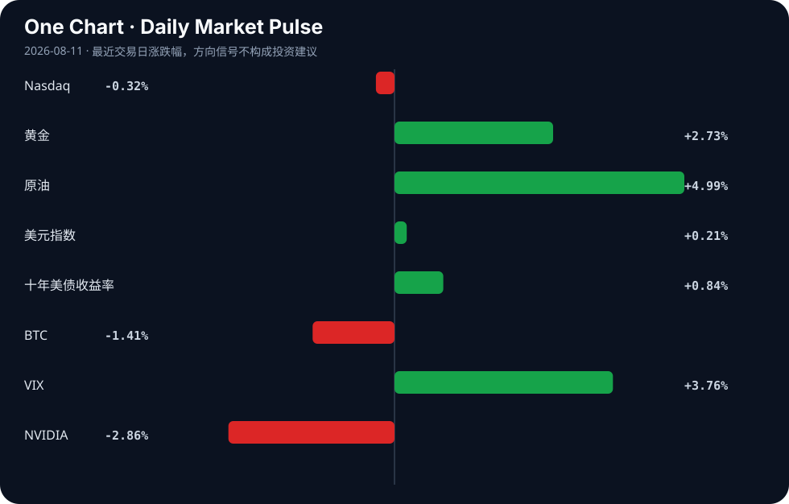

Daily Intelligence
2026-08-11｜Tuesday
Today’s Thesis｜今日一句话
AI算力正加速金融化为可投资资产，但安全与监管的政治逆风同步见顶，两者的张力将决定下一阶段AI资本的流向与估值。
① Executive Summary｜30 秒
1. AI：华尔街与Nvidia达成5000亿美元融资协议[A9,A14]，算力正式成为可投资资产类别[A8]，同时政治与安全监管压力剧增[A4,A7]。
2. 商业：中国占据全球人形机器人97%出货量[B20]，字节跳动AI支出超2000亿元[A21]，硬件与应用的规模化正重塑制造与科技格局。
3. 宏观：金价突破面临通胀数据考验[B16]，油价波动重塑非洲贸易机会[B18]，新兴市场在资源加工与支付系统上寻求去美元化突破[B19,B22]。
② AI Daily
算力资产化：华尔街与Nvidia的5000亿美元同盟
What Happened: 华尔街巨头与Nvidia合作推出5000亿美元AI融资协议[A9,A14]，Nvidia CEO宣称AI工厂算力正成为可投资资产类别[A8]。 Why It Matters: 算力不再是单纯的IT基础设施支出，而是具备预期现金流和抵押属性的金融资产。这打破了超大规模AI资本开支的融资瓶颈。 Second-order Effect: 算力资产证券化 → 资本成本下降 → 算力过度建设风险累积 → 可能的算力过剩与资产重估。
监管与安全的政治逆风
What Happened: 伯尼·桑德斯呼吁暂停AI开发[A4]；美国议员就失控模型向AI公司施压[A7]；加州州长要求机构防范AI攻击[A3]；天主教专家呼吁加强人类监督[A6]。 Why It Matters: AI的安全外部性正在从技术问题转化为政治议题。立法压力的集中爆发可能改变模型迭代速度与开源策略。 Second-order Effect: 监管收紧预期 → 合规成本上升 → 开源模型受限 → 中小AI创企出清，巨头垄断加剧。
企业AI落地的“幻觉”陷阱
What Happened: 业界指出Demo表现优异但企业Agent频频失败[A23]；AI在医疗/银行数据删除后仍违规保留30天[A20]；字体对抗暴露AI视觉脆弱性[A22]。 Why It Matters: 技术演示与生产环境的鸿沟说明AI的可靠性边界仍被高估，数据合规与对抗性攻击是落地的硬约束。 Second-order Effect: 落地不及预期 → 企业IT预算从模型训练转向RAG与安全护栏 → 催生AI审计与合规工具新市场。
③ Business Daily
科技
字节跳动今年AI支出被爆将超2000亿人民币[A21]，显示中国科技巨头在AI军备竞赛中的资本强度正在对齐全球头部水平。Claude标记AI生成内容的机制引发社区热议[A15]，内容溯源与版权界定正成为模型提供商的必答题。
制造
中国占据上半年全球人形机器人97%的出货量[B20]，供应链优势与广阔市场正驱动其快速规模化。智能工厂生态系统为动荡时代的化工业提供数字化助推[B12]，制造端的韧性需求正加速AI与物联网的深度融合。
金融
巴西央行寻求扩大Pix支付系统，面临美国贸易审查加剧[B22]；南共体（SADC）关注本地矿物加工以驱动工业增长[B19]。新兴市场正试图在支付清算与关键矿物产业链上建立绕开传统金融中心的自主性。
④ Macro Observation｜机制分析
世界正在发生什么？ 全球资本在AI算力基础设施上押注历史性规模（5000亿美元[A9]），同时传统避险资产（黄金[B7,B16]）和能源（原油[B18]）因通胀预期和地缘重构而波动。新兴市场正试图在支付系统（巴西Pix[B22]）和矿物加工（南共体[B19]）上建立自主性。
为什么发生？ AI的算力渴求与金融工程的结合（算力资产化[A8]）打破了传统IT预算约束；而通胀数据的 looming（逼近）[B16] 和贸易审查[B22] 触发了反身性的避险需求。事实：原油与黄金同步上涨；推断：市场正在对冲“通胀顽固+金融条件偏紧”的滞胀组合。
资本如何流动？ 资本正从传统风险资产（Nasdaq ↓, BTC ↓）流向通胀对冲（黄金 ↑, 原油 ↑）和AI底层算力信贷。新兴市场资本流向本地化产业链[B19]与氢能[B2]。
接下来关注什么？ 关注算力资产化的实际利率敏感度（十年美债收益率4.70%），以及通胀数据对黄金突破的验证[B16]。推断：若通胀顽固，高利率将刺穿算力资产的估值泡沫。
⑤ Signal Dashboard
| 指标 | 最新值 | 今日 | 信号 |
|---|---|---|---|
| Nasdaq | 26,605.36 | ↓ -0.32% | 风险偏好降温 |
| 黄金 | 4,459.20 | ↑ +2.73% | 避险/通胀对冲增强 |
| 原油 | 82.08 | ↑ +4.99% | 通胀压力上升 |
| 美元指数 | 99.81 | ↑ +0.21% | 金融条件偏紧 |
| 十年美债收益率 | 4.70 | ↑ +0.84% | 成长估值承压 |
| BTC | 63,930.98 | ↓ -1.41% | 风险偏好降温 |
| VIX | 15.46 | ↑ +3.76% | 避险升温 |
| NVIDIA | 217.55 | ↓ -2.86% | 风险偏好降温 |
⑥ Deep Insight
算力金融化的反身性陷阱
当前市场对AI的乐观很大程度上建立在“算力即权力”的叙事上，而Nvidia与华尔街巨头联手将AI工厂算力包装成可投资资产类别[A8,A9,A14]，标志着这一叙事正式进入了金融化阶段。然而，一个容易被忽略的非共识视角是：算力资产化不仅不会平滑AI的资本周期，反而会通过金融反身性加速其周期内爆。
算力成为金融资产的前提，是其产出（Token与推理服务）具有稳定且不断增长的真实需求，能产生覆盖资本成本的现金流。华尔街提供高达5000亿美元的融资协议[A9]，本质上是将未来远期的算力需求折现到今天。这形成了一个强烈的正反馈循环：融资更容易 → 算力建设更多 → 供给增加压降推理单价 → 应用端看似繁荣。但这里隐藏着致命的供给侧反身性陷阱：算力是重资产且高度同质化的，一旦被允许证券化，金融机构与科技巨头有极强的动机超发算力信贷与产能，导致算力供给的指数级增速远超真实商业AGI需求的线性增速。
与此同时，需求侧正面临政治与合规的硬约束收紧。伯尼·桑德斯呼吁暂停开发[A4]，美国议员就失控模型向AI公司施压[A7]，加州要求政府机构防范AI攻击[A3]。这些约束会大幅提高AI应用落地的合规成本与试错代价，导致“Demo有效但企业Agent失败”[A23]的鸿沟长期无法弥合。若应用端无法产生足够的商业闭环与利润来消化庞大的算力折旧，算力资产的现金流预期就会崩塌。
更危险的是，算力资产的估值对宏观利率极度敏感。当前十年期美债收益率已达4.70%，在原油飙升带来的通胀压力下，折现率居高不下。算力资产的久期极长，一旦宏观利率预期再上修，这种长久期资产的重估将极其惨烈。
反方观点：算力资产化如同云计算早期的重资产投入，虽然短期可能供过于求，但极低的推理成本将引爆目前未知的杀手级应用，需求最终会追赶并超越供给，使算力资产回报转正。
证伪条件：1. 未来两个季度内，头部云厂商的AI推理利用率出现持续且不可逆的下滑；2. 华尔街基于算力的抵押支持证券（若发行）出现违约或评级下调；3. 美联储降息落空，长端利率突破5.0%并长期维持。
⑦ Tomorrow Watch
1. 验证美国CPI通胀数据对黄金技术突破的确认[B16]。
2. 追踪美国国会关于AI失控模型立法的听证会进展[A7]。
3. 关注字节跳动超2000亿AI支出的具体资本开支分配细节[A21]。
4. 比较巴西Pix支付系统扩张与美方贸易审查的博弈结果[B22]。
5. 验证华尔街5000亿AI融资协议的具体资金落地与首期项目[A9,A14]。
⑧ One Chart

图表展示了风险资产与避险资产的显著分化。纳指与BTC下行而黄金与原油上行，暗示宏观流动性在收紧预期下正从成长板块撤出，转向通胀与避险对冲。
⑨ Quote of the Day
“You can’t predict, but you can prepare.”
— Howard Marks
中文理解：你无法精确预测未来，但可以为多种未来提前准备。
Why it matters today：这句话不是装饰，而是今天观察 AI、商业和宏观变化时的一个思考框架：先看机制，再看价格；先看约束，再看叙事。
⑩ Action Items｜今天值得思考什么
1. 追踪算力资产化协议中的抵押品结构与风险传导路径[A8,A9]。
2. 验证企业AI Agent失败案例中的共性合规与数据保留漏洞[A20,A23]。
3. 比较中美在AI资本开支（字节2000亿[A21] vs 华尔街5000亿[A9]）下的ROI差异。
4. 关注新兴市场（摩洛哥氢能[B2]、南共体矿物[B19]）在全球供应链重构中的承接能力。
5. 思考AI监管政治化（暂停开发[A4]）对开源模型生态的长期挤出效应。
信息边界
本报告信息边界受限于提供的24条AI新闻源与24条商业/宏观新闻源。时效覆盖2026年8月10日前后。市场数据反映最近交易日收盘或实时报价。新闻来源多为二手聚合，重要判断需读者回溯原文验证。未包含非材料提供的事实与数据。
Sources
AI
- A1：North Carolina Central University made history as the first HBCU in the nation to launch a dedicated AI research center - ABC11 News — Google News · AI
- A2：Show HN: AI-powered App Store replies that sound like you — Hacker News · AI
- A3：Newsom to California agencies: Better prepare for artificial intelligence attacks - Sacramento Bee — Google News · AI
- A4：Bernie Sanders calls for AI development pause — Hacker News · AI
- A5：Five takeaways from Zuckerberg’s AI manifesto - The Detroit News — Google News · AI
- A6：Catholic expert: "Security issues show AI needs greater human oversight" — Hacker News · AI
- A7：Lawmakers ramp up pressure on AI companies over rogue models - The Washington Post — Google News · AI
- A8：Nvidia AI Factory Compute Is Becoming an Investable Asset Class — Hacker News · AI
- A9：Wall Street giants partner with Nvidia on $500B AI financing deal — Hacker News · AI
- A10：Show HN: AI Pulse a fake LED strip beside the macOS Dock that shows agent status — Hacker News · AI
- A11：AI framework rooted in cognitive science could complete tasks more efficiently — Hacker News · AI
- A12：NCCU opens nation’s first HBCU artificial intelligence insti... - QCity Metro — Google News · AI
- A13：AI is giving hackers an edge. Here’s how to protect yourself from online scams - Scripps News — Google News · AI
- A14：Nvidia to Team With Wall Street on $500 Billion Package, FT Says - Bloomberg.com — Google News · AI
- A15：How Claude marks AI-generated content — Hacker News · AI
- A16：AI-only Society holds $17k on-chain, publishes its books, and patches them by PR — Hacker News · AI
- A17：Nexus AI — Hacker News · AI
- A18：Artificial intelligence in the classroom: what could it look like? - WSLS — Google News · AI
- A19：The Cerdanyola synchrotron defies the crisis by bringing together 10,000 users to lead the leap to artificial intelligence - APD Noticies — Google News · AI
- A20：Artificial intelligence retains 30 days the medical or banking data that users have just deleted - APD Noticies — Google News · AI
- A21：【早报】字节被爆今年AI支出将超2000亿；我国第四代自主超导量子计算机上线 - 财联社 — Google News · AI 中文
- A22：Font looks perfectly normal to humans but wreaks havoc on AI — Hacker News · AI
- A23：The Great AI Illusion: Why Your Demo Works, but Your Enterprise Agent Fails — Hacker News · AI
- A24：奉贤实现教师AI培训全覆盖 - shobserver.com — Google News · AI 中文
Business & Macro
- B1：Building a low-carbon economy - Bangkok Post — Google News · Global Economy
- B2：UNCTAD: Morocco draws investment in hydrogen, energy and industry - en.hespress.com — Google News · Global Economy
- B3：ECONOMIC TRENDS KEYNOTE SPEAKER FOR CORPORATE & VIRTUAL EVENTS - futuristsspeakers.com — Google News · Markets Policy
- B4：USA Rare Earth Reports Second Quarter 2026 Financial Results - The Manila Times — Google News · Technology Business
- B5：Mid-year review and assessment - The Globe and Mail — Google News · Markets Policy
- B6：Local garment industry must build its own brands - The Daily Star — Google News · Global Economy
- B7：Gold Price Forecast & Predictions for 2026, 2027, 2028–2030 and Beyond - LiteFinance — Google News · Markets Policy
- B8：Small cap wrap: Grey Matters Health, Varon, First Phosphate, TNR Gold… - Proactive financial news — Google News · Technology Business
- B9：How Fed dot plot signals work - equiti.com — Google News · Markets Policy
- B10：The Rubik's Cube economy - The Financial Express — Google News · Markets Policy
- B11：Interview with the IEEE’s Dejan Milojicic: 30 technology megatrends for 2030 - Robotics & Automation News — Google News · Technology Business
- B12：Smart Factory Ecosystem: A digital boost for the chemicals industry in an era of turbulence - weforum.org — Google News · Global Economy
- B13：21社论丨稳定国内需求需要宏观政策进一步加力 - 手机网易网 — Google News · 行业
- B14：China's Innovation Ecosystem: A Global Catalyst for Growth - Alwihda Info — Google News · Global Economy
- B15：Local prefabricated steel industry hits demand slump - The Daily Star — Google News · Global Economy
- B16：Gold's Technical Breakout Faces Its First Real Test as Wednesday's Inflation Print Looms - AD HOC NEWS — Google News · Markets Policy
- B17：GBP/USD Price Forecast — GBPUSD at 1.3501 With Both Central Banks at 3.75% — 1.3650 Caps - TradingNEWS — Google News · Markets Policy
- B18：How Oil Price Swings Are Creating New Opportunities for African Traders - The Guardian Nigeria News — Google News · Markets Policy
- B19：SADC Eyes Local Mineral Processing to Drive Industrial Growth - Devdiscourse — Google News · Global Economy
- B20：China takes 97% of H1 global humanoid robot shipments; supply chains, vast market drive rapid scale-up, intl reach: expert - Global Times — Google News · Global Economy
- B21：EURUSD Forecast & Predictions for 2026, 2027–2028, and Beyond until 2030 - LiteFinance — Google News · Markets Policy
- B22：Brazil central bank eyes expansion for Pix payment system as US trade scrutiny intensifies - Reuters — Google News · Markets Policy
- B23：Market movers: Archer Aviation, Barrick Mining, Graphene Manufacturing Group... - Proactive financial news — Google News · Technology Business
- B24：Who Is the Richest Person in the United States? - HowStuffWorks — Google News · Technology Business